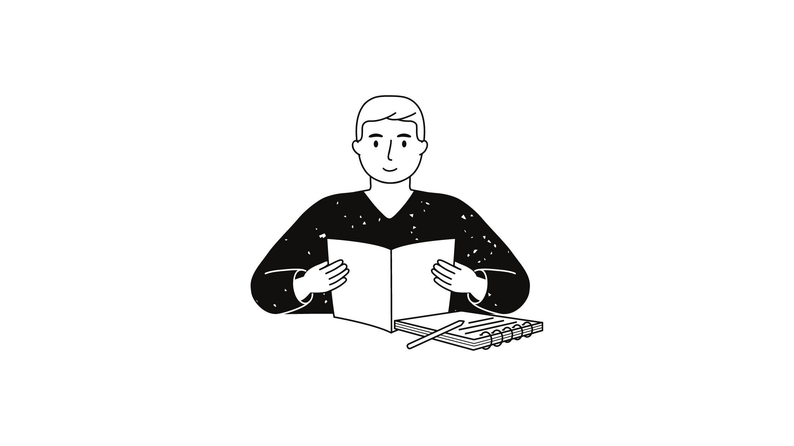

The day you become a better Reader

Youtubers and marketing make us believe that if we read all the
‘must-read’ self-help books they recommend, we will be leading the
future. And if we don’t read them, we will be worthless in the future.
Is it? This belief needs to be challenged.
This belief has forced us to corrupt the true process of reading. We
see books as a tool for self-growth and learning. However, the way
many people read books growth is nowhere in sight.
While they crave ‘learning’, they are sold to the idea of ‘reading’.
Let’s see some common reading patterns. In fear of missing out on the
future, they include all the recommended books in their reading list.
The list is long. To read faster, they keep goals like reading 20
pages a day or completing a book in a week. While reading one book
they’re only seconds away from thinking of another book in the list
they could read.
What’s really happening here?
They keep reading book after book and feel satisfied as they jam their shelf with all the ‘best sellers’. They take pride in the number of books they have read. They believe that they are growing and learning with each book. However, back on earth, these are nothing more than a few feelings.
In reality, they are only reading for numbers and bragging. Only to
move the book from reading list to read list.
Where’s the ‘learnings’ and ‘growth’ they were looking for?
The soul of a book is in its pages. Quickly finishing a book won’t give us the growth we are looking for. The learning we aim for happens when we stay with the words and sentences of a book.
Read a paragraph. Sit with it for some time. Try to understand the
author’s point of view.
As you get an ‘ah-ha’ moment, take a pause and question, what’s
different in this idea? Is it really insightful? How can I apply it in
my current situation?
The hype is around visiting as many best and must-read as possible.
Rethink the way you explore books. The big shelf is for bragging.
Learning is on the pages.